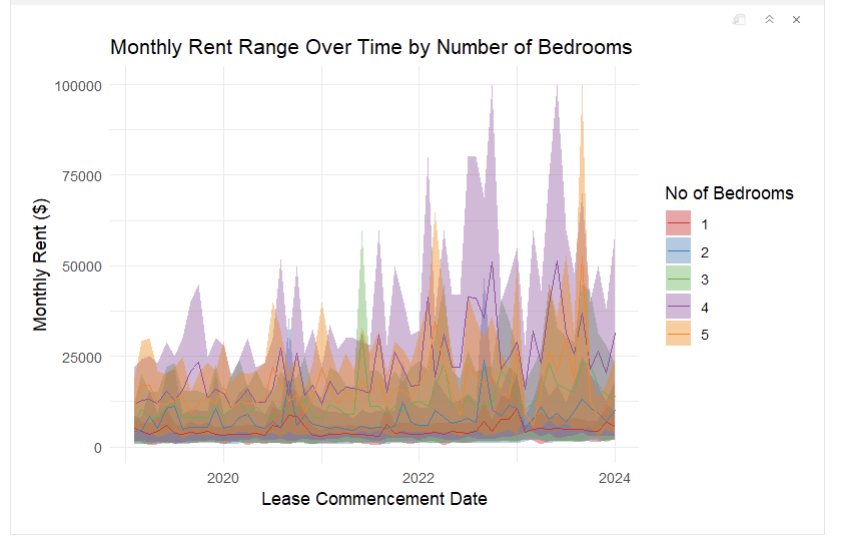
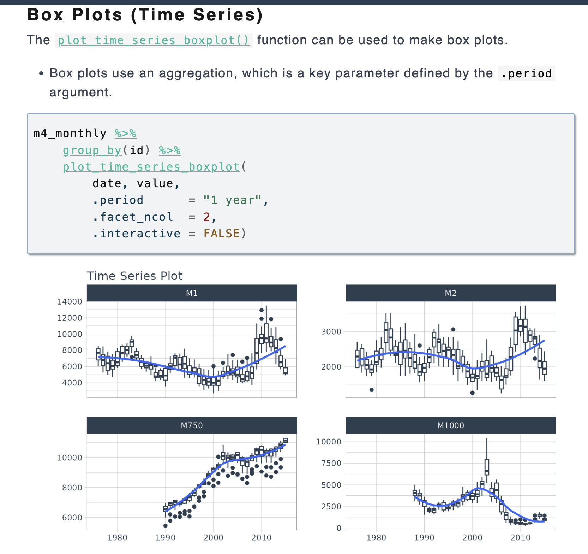
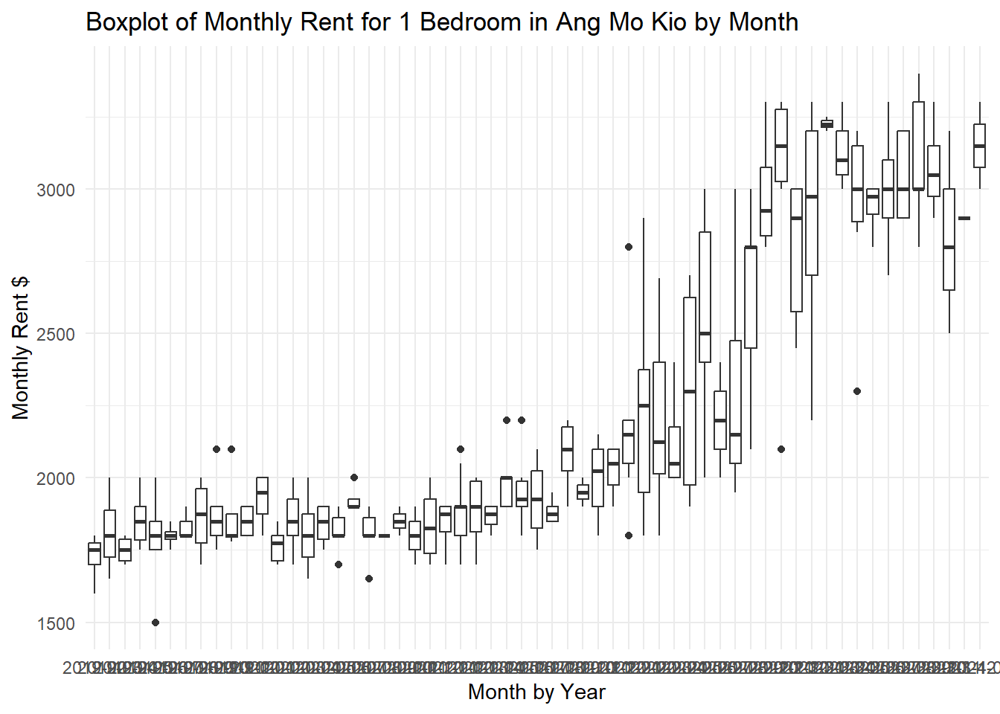
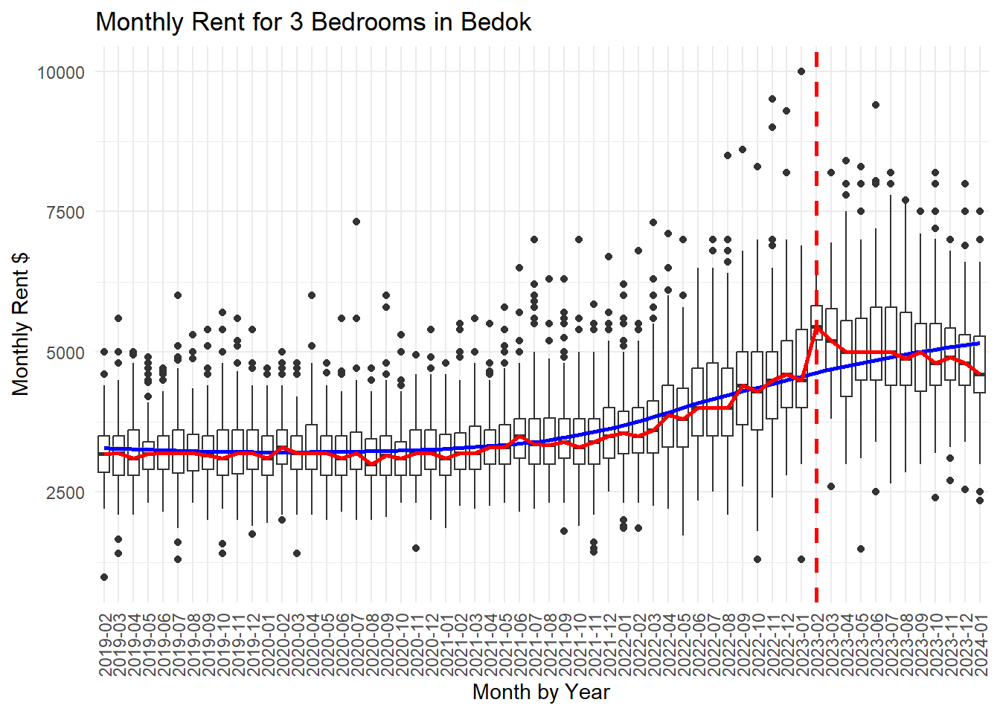
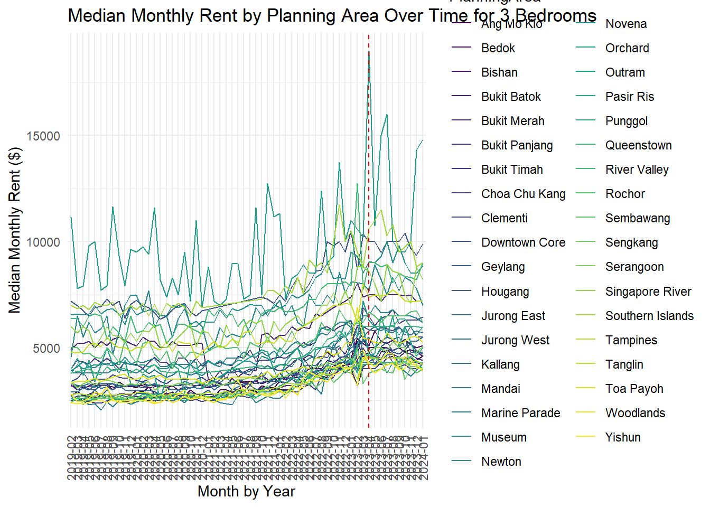

pacman::p_load(lubridate, ggthemes, reactable,reactablefmtr, gt, gtExtras, tidyverse, ggplot2)Take-home_Exercise04
The Task ：
In this take-home exercise, we are required to select one of the module of your proposed Shiny application and complete the following tasks:
To evaluate and determine the necessary R packages needed for your Shiny application are supported in R CRAN, To prepare and test the specific R codes can be run and returned the correct output as expected, To determine the parameters and outputs that will be exposed on the Shiny applications, and To select the appropriate Shiny UI components for exposing the parameters determine above.
1.0 Pre-process Data:
1. 1 Package:
tidyverse: A collection of R packages designed to facilitate data science and data analysis workflows. It includes tools for reading, tidying, analyzing, and visualizing data. Packages withintidyversework together seamlessly to make data analysis more straightforward.ggplot2: Also part oftidyverse, a data visualization package based on the grammar of graphics. It allows users to build complex plots from simple scatter plots to multi-layered graphics with ease.lubridate: An R package specifically for dealing with dates and times, simplifying the management of date-time data. It offers functions to parse, manipulate, and perform calculations with date-time objects, simplifying analyses involving dates and times.ggthemes: Provides additional themes and scaling options for customizingggplot2graphics, enhancing the aesthetic appeal of visualizations.reactable: For creating interactive data tables, facilitating dynamic data exploration and presentation.reactablefmtr: An extension toreactable, offering more custom formatting options for tables, enhancing the readability and functionality of data presentations.gt: Designed for creating customizable tables, suitable for data exploration and result sharing, offering a high degree of customization and flexibility.gtExtras: An extension of thegtpackage, providing additional functionalities and conveniences for creating even more detailed and customized tables.
1.2 Load Data:
file_names <- list.files(path = "data/ResidentialRental", pattern = "^20.*\\.csv$", full.names = TRUE)1.3 Reads all files and handles the ‘Postal District’ and ‘No of Bedroom’ columns simultaneously
file_names <- list.files(path = "data/ResidentialRental", pattern = "^20.*\\.csv$", full.names = TRUE)
all_data <- lapply(file_names, function(file) {
read_csv(file, show_col_types = FALSE) %>%
mutate(
`Postal District` = as.character(`Postal District`),
`No of Bedroom` = as.numeric(as.character(`No of Bedroom`)),
`Lease Commencement Date` = dmy(paste0("01-", `Lease Commencement Date`))
)
})1.4 Merge all data boxes into one DataFrame
combined_data <- bind_rows(all_data)1.5 Delete any lines that contain NA
combined_data <- na.omit(combined_data)1.6 Write the data box (or dataset) named combined_data into a CSV file named “rent.csv” so that team members can work on the file together
write.csv(combined_data, "rent.csv", row.names = FALSE)1.7 Load Data
rental <- read_csv("data/rent.csv") 1.8 Select and rename columns to simplify subsequent data analysis
rentalnew <- rental %>%
select(
NoOfBedroom = `No of Bedroom`,
MonthlyRent = `Monthly Rent ($)`,
ProjectName1 = `Project Name`,
LeaseCommencementDate = `Lease Commencement Date`)1.9 Simplification
postdistrictdata <- read_csv("data/realis2018.csv") %>%
select(PlanningArea = "Planning Area",
ProjectName2 = "Project Name") %>%
distinct()2.0 Merging two data boxes, deleting rows containing NA values, and conditionally modifying the values in the data box
Retentialdatamerged <- rentalnew %>%
left_join(postdistrictdata, by = c("ProjectName1" = "ProjectName2")) %>%
drop_na() %>%
mutate(PlanningArea = case_when(
PlanningArea == "YISHUN" ~ "Yishun",
TRUE ~ PlanningArea
)) 2.0 Analysis
2.1 First design

2.2 Effect display

The problem with the chart is that the information is too complex, there are too many overlapping areas, and it is not easy for readers to read.
2.3 The second version of the chart uses Time Series Box Plot.
Introduction of Time Series Box Plot:

Time Series Box Plot: https://business-science.github.io/timetk/articles/TK04_Plotting_Time_Series.html
Show the code
Retentialdatamerged$LeaseCommencementDate <- as.Date(Retentialdatamerged$LeaseCommencementDate)
Retentialdatamerged$YearMonth <- format(Retentialdatamerged$LeaseCommencementDate, "%Y-%m")
ang_mo_kio_data <- Retentialdatamerged %>%
filter(PlanningArea == "Ang Mo Kio", NoOfBedroom == 1)
ggplot(ang_mo_kio_data, aes(x = YearMonth, y = MonthlyRent)) +
geom_boxplot() +
theme_minimal() +
labs(title = "Boxplot of Monthly Rent for 1 Bedroom in Ang Mo Kio by Month",
x = "Month by Year",
y = "Monthly Rent $") 
Advantages:
1. Rotate the date label to make it vertical or tilt to reduce overlap.
2. Use larger chart sizes to provide more space for labels.
3. Showing only partial labels for each time period, such as each quarter or the first month of the year.
2.4 : Promotion
Retentialdatamerged$LeaseCommencementDate <- as.Date(Retentialdatamerged$LeaseCommencementDate)
Retentialdatamerged$YearMonth <- format(Retentialdatamerged$LeaseCommencementDate, "%Y-%m")
Retentialdatamerged$YearMonthDate <- as.Date(paste0(Retentialdatamerged$YearMonth, "-01"))
rental_data <- Retentialdatamerged %>%
filter(PlanningArea == "Bedok", NoOfBedroom == 3)monthly_median <- aggregate(MonthlyRent ~ YearMonth, data = rental_data, median)
highest_median_month <- monthly_median$YearMonth[which.max(monthly_median$MonthlyRent)]
ggplot(rental_data, aes(x = YearMonth, y = MonthlyRent)) +
geom_boxplot() +
geom_smooth(method = "loess", colour = "blue", fill = "grey", alpha = 0.5, size = 1, aes(group = 1)) +
stat_summary(fun = median, geom = "line", colour = "red", size = 1, aes(group = 1)) +
geom_vline(xintercept = highest_median_month, color = "red", linetype = "dashed", size = 1) +
theme_minimal() +
labs(title = "Monthly Rent for 3 Bedrooms in Bedok",
x = "Month by Year",
y = "Monthly Rent $") +
theme(axis.text.x = element_text(angle = 90, vjust = 0.5, hjust=1))
Both charts show the distribution of rent data for different apartment types, and both use box plots. Box plots are a standardized way of showing data distribution based on five-number generalizations (minimum, first quartile (Q1), median, third quartile (Q3), maximum).
The first chart shows the distribution of monthly rents for one-bedroom apartments in Ang Mo Kio over a period of months and years. It can be seen that the median rent has fluctuated over time, but the overall trend is not very clear. In addition, some outliers can be seen, which indicate that some months have abnormally high or low rents.
The second chart shows the distribution of monthly rents for three-bedroom apartments in the Bedok area. In addition to the box chart, this chart also includes a smooth trendline (blue line) of the data, which reveals the overall trend of rents over time. In addition, there is a dotted red line on the chart that may represent a specific point in time or stage when the data is analyzed.
2.5: Combine all areas: Median Monthly Rent by Planning Area Over Time for 3 .
stats_by_area_and_date <- Retentialdatamerged %>%
group_by(PlanningArea, YearMonth, NoOfBedroom) %>%
summarise(
MinRent = min(MonthlyRent, na.rm = TRUE),
MaxRent = max(MonthlyRent, na.rm = TRUE),
MedianRent = median(MonthlyRent, na.rm = TRUE),
.groups = "drop")
roomline <- stats_by_area_and_date %>% filter(NoOfBedroom == 3)
highest_rent <- max(roomline$MedianRent, na.rm = TRUE)
highest_rent_month <- roomline$YearMonth[roomline$MedianRent == highest_rent]
ggplot(roomline, aes(x = YearMonth, y = MedianRent, group = PlanningArea, color = PlanningArea)) +
geom_line() +
geom_vline(xintercept = highest_rent_month, color = "red", linetype = "dashed") +
theme_minimal() +
labs(title = "Median Monthly Rent by Planning Area Over Time for 3 Bedrooms",
x = "Month by Year",
y = "Median Monthly Rent ($)") +
theme(axis.text.x = element_text(angle = 90, vjust = 0.5, hjust=1)) +
scale_color_viridis_d()